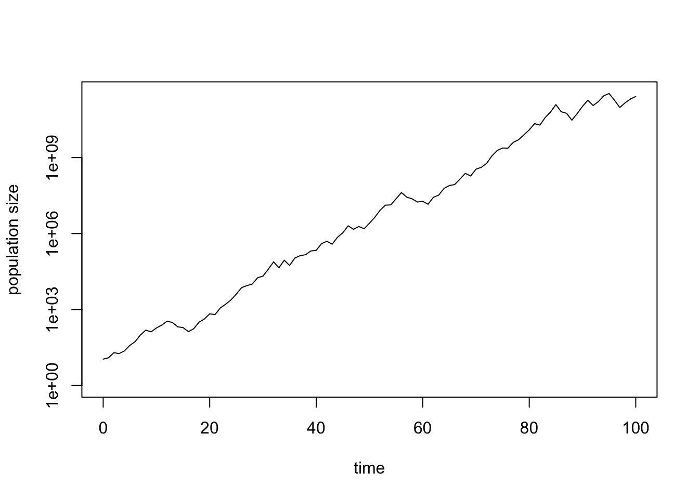
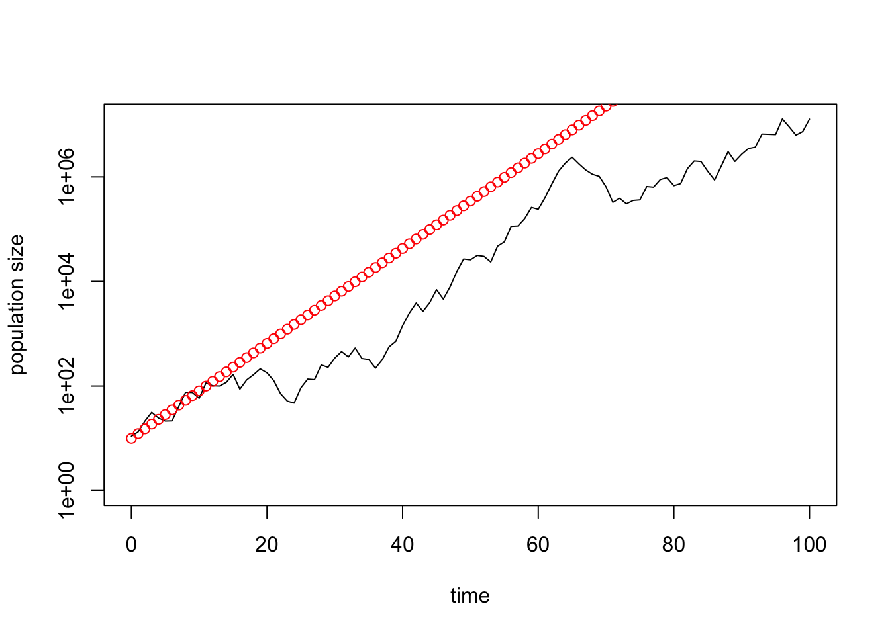
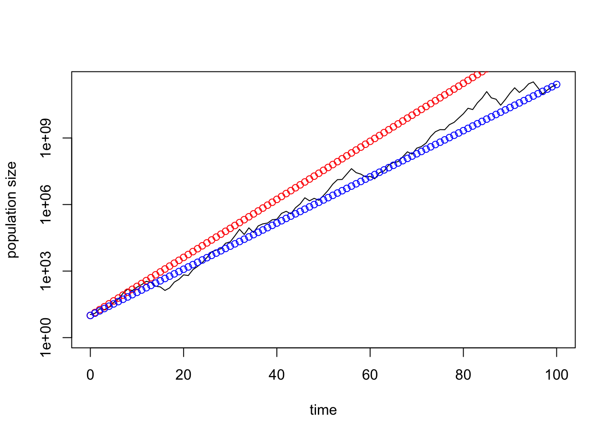
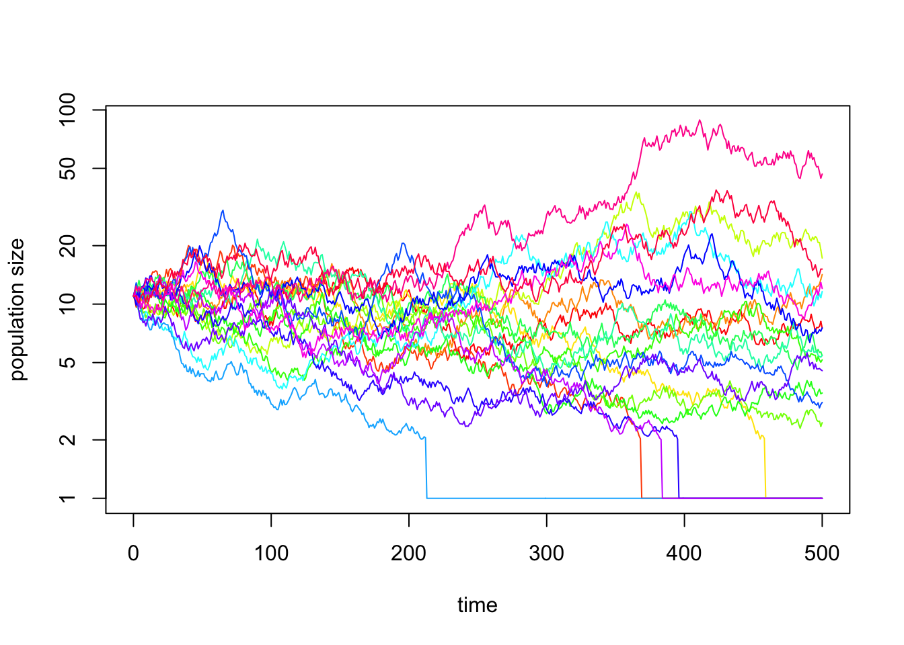

In the lecture, we derived
\[ N(t)=N(0)*(1+p_bn-p_d)^t=N(0)*\lambda^t \] as a model for exponential growth in discrete time, where \(\lambda=1+p_bn-p_d\). If the population size is sufficiently large, this becomes a deterministic model because the number of offspring produced, B, and the number of individuals dying, D, at any time step will be very close to the expected values \(N(t)p_bn\) and \(N(t)p_d\), respectively. This is due to the law of large numbers. We will investigate the effect of demographic stochasticity as it occurs in small populations in a later exercise.
Importantly, the above equation assumes that the growth factor \(\lambda\) does not vary in time. In this exercise, we will relax this assumption. For example, climatic conditions vary among years and this might affect the the probability to produce offspring, \(p_b\), the average number of offspring, \(n\), and the probability to die, \(p_d\), of ALL individuals in a population. In short, \(\lambda\) will vary in time and we indicate this by giving it a subscript, \(\lambda_t\).
In this exercise, we simulate environmental stochasticity in R. We do this by choosing a set of random postive numbers that represent the \(\lambda\)-values in different years. More concretely, let us assume that we can represent the fluctuation in the environment by drawing a sequence of \(\lambda\)-values from an interval with a lower boundary given by the parameter min and an upper boundary given by the parameter max. Let us furthermore assume that eaach number of within the interval (min, max) occurs with equal probability. We can do this in R by using the command runif(n, min,max). The name runif is an abbreviation combining the words random and uniform, indicating that the command runif(n, min, max) produces a vecotor of max numbers (the length of the time series) and that these are drawn randomly from the interval (min, max). Drawing a set of random numbers from an interval corresponds to drawing numbers from a uniform distribution.
runif(10, 1, 2) # produces a vector of 10 random numbers between 1 and 2## [1] 1.493550 1.560857 1.774472 1.297771 1.404146 1.932082 1.194803 1.310472
## [9] 1.826872 1.537766We could in principle decide to draw the random numbers from distributions other than the normal distribution, for example from a Normal or Poisson distribution (using the commands rnorm(n, mean, sd) and rpois(n, lambda), respectively). However, we would have to assure that we only obtain positive values, since the growth factor \(\lambda\) is by definition a non-negative number.
Let us dfine the parameter values of the random distributino and then draw the sequence of \(\lambda\)-values.
n <- 100 # lenght of time series
min <- 0.5 # lowest possible value of the growth factor lamabda
max <- 2 # largest possible value of the growth factor lambda
N0 <- 10 # initial population size
growth_factors <- runif(n, min, max)In the next step, we want to use the sequence of \(\lambda\)-values to project a population that consists of N0 individuals at time t=0 t time steps into the future. Thus, we want to compute
\[ N(t)=\lambda_{t-1}*\lambda_{t-2}*\ldots*\lambda_2*\lambda_1*\lambda_0*N(0). \]
N0 <- 10 # population size at time t=0
time_series <- numeric(n+1) # creates an (empty) vector of length n+1 (initial values plus n later time steps) in which we will store the population time series
time_series[1] <- N0 # initial population size N0 entered as first entry
for (t in 1:n) {# for-loop that projects the population n time steps into the future
time_series[t+1] <- if (time_series[t]*growth_factors[t] < 1) 0 # sets the population vector to 0 in case N drops below 1
else time_series[t]*growth_factors[t]
}Assuming that N describes the absolute population size we in this code set any population size less than one equal to zero (half a fox does not exist). In other words, if \(N < 1\) at any time t, then the we consider the population extinct from that time point onwards. Next, we plot the resulting time series on a log-scale.
plot(0:n, time_series+1, type="l", log="y", ylim=c(1,max(time_series)), xlab="time", ylab="population size")
At each instance this code is executed (starting from the line in which the vector growht_factors is defined), we obtain a different random time series. If you produce several time series, you will note that in some cases the population goes extinct while in others the population is still present after n time steps.
To confirm that the arithmetic mean of the annual grwoth factors given by
\[ \bar\lambda=\frac{1}{t}(\lambda_{t-1}+\lambda_{t-2}+\ldots+\lambda_2+\lambda_1+\lambda_0) \]
is not informative, we can add the time series as it would result if the population would grow each time step by the factor \(\bar\lambda\).
arithmetic_mean <- mean(growth_factors) # calculates the arithmetic mean of the annual grwoth factors
arithmetic_mean # shows the value of the arithmetic mean## [1] 1.232333Next, we add the line that shows how the population develops if it changes each year according to the arithmetic mean of the \(\bar\lambda\).
time_series_arith <- numeric(n+1) # creates an (empty) vector of length tmax+1 in which we will store the population time series
time_series_arith[1] <- N0 # first entry in this vector equals initial population size N(0)
for (t in 1:n) {# for-loop that projects the population tmax time steps into the future using only the arithmetric mean
time_series_arith[t+1] <- max(0, time_series_arith[t]*arithmetic_mean)
}
plot(0:n, time_series+1, type="l", log="y", ylim=c(1,max(time_series)), xlab="time", ylab="population size") # repeats the plot with the stochastic time series
lines(0:n, time_series_arith, type="p", col="2") # adds the line based on arithmetric mean to the plot
As expected, the arithmetic mean growth factor is not very accurate in predicting the fate of the population.
Next, let us add a line that shows how the population changes if each year it grows according to the geometric mean, \(\tilde\lambda\), of the annual growth factors, defined as
\[ \tilde\lambda:=(\lambda_{t-1}*\lambda_{t-2}*\ldots*\lambda_2*\lambda_1*\lambda_0)^{\frac{1}{t}} \]
geometric_mean <- exp(mean(log(growth_factors))) # calculates the geometric mean of the annual grwoth factors by using Eq.(3.16) in Pasztor et al. (2016)
geometric_mean # shows the value of the geometric mean## [1] 1.150874The following piece of code adds the desired line:
time_series_geom <- numeric(n+1) # creates an (empty) vector of length tmax+1 in which we will store the population time series
time_series_geom[1] <- N0 # first entry in this vector equals initial population size N(0)
for (t in 1:n) {# for-loop that projects the population tmax time steps into the future using only the geometric mean
time_series_geom[t+1] <- max(0,time_series_geom[t]*geometric_mean)
}
plot(0:n, time_series+1, type="l", log="y", ylim=c(1,max(time_series)), xlab="time", ylab="population size") # repeats the plot with the stochastic time series
lines(0:n, time_series_arith, type="p", col="2") # adds the line based on arithmetric mean in red
lines(0:n, time_series_geom, type="p", col="4") # add the line based on geometric mean in blue
You might encounter simulation runs in which the population goes extinct while the projection based on the geometric mean suggests that the population should slowly increase. Can you explain this apparent contradiction?
You have seen that for the chosen set of parameters min, max, n and N0 a certain proportion of simulation runs results in extinction. How does the probability of extinction depend on these parameters? You can explore this question by changing the values for min, max, n and N0.
To investigate this question more systematically, it is useful to somewhat automatize the process in R. We start by defining a new function to make the depency of the time series on min, max, n and N0 explicit.
environmental_stochasticity <- function(N0, n, min, max) {# function with four arguments
growth_factors <- runif(n, min, max) # creates vector of n random lambda-values
time_series <- numeric(n+1) # creates an empty vector to store time series
time_series[1] <- N0 # defines the N0 as the first entry in the time sereis
for (t in 1:n) {
time_series[t+1] <- if (time_series[t]*growth_factors[t] < 1) 0 else time_series[t]*growth_factors[t]
}
return(time_series)
}This function produces a population time series for a given set of parameters. The resulting population time series is stored in the vector time_series.
The next piece of code allows us to execute the population simulation several times by putting our function inside a for-loop. How often the times series is repeated is determined by the new parameter sim, below set equal to 20. Note that each time series is different from the others because it is based on a different set of random \(\lambda\)-values.
n <- 500 # lenght of time series
min <- 0.9 # lowest possible value for growth factor
max <- 1.1 # largest possible value of growth factor
N0 <- 10 # initial population size
sim <- 20 # number of simulation runs
results <- matrix(numeric(sim), nrow = n + 1, ncol = sim) # creates an empty matrix to save the results
j <- 1 # intialize a counter
for (i in 1:sim) {# executes the function sim times
results[, j] <- environmental_stochasticity(N0, n, min, max) # produces a time series and stores it in the jth column of the matrix results
j = j + 1 # updates the counter by increasing it by 1
}The following code plots all time series on a log scale in a single figure:
cl <- rainbow(sim) # set number of colors equal to number of simulations
maxN <- numeric(sim) # here we determines how long the y-axis has to be
for (i in 1:sim) {# we do this by determining the largest population size that is reached in each of the simulations
maxN[i] <- max(results[, i])
}
plot(0:n, results[, 1]+1, type="l", log="y", ylim=c(1, max(maxN)), col=cl[1], xlab="time", ylab="population size") # plot the result from the first simulation
for (i in 2:sim) {# add the results from all other simulations to the same graph
lines(0:n, results[, i]+1, type="l", col=cl[i])
}
From these graphs, you can determine the number of simulation runs in which the population goes extinct.
Keep max=2 fixed and vary min and n according to min = (0; 0.1; 0.2; 0.3; 0.4; 0.5) and tmax = (100; 200; 500), respectively. Varying both parameters together gives you 18 parameter combinations which you can arrange in a table with three rows (n) and six columns (min). In each cell of this table, enter the proportion of 20 runs that result in extinction. Do these simulations for tmax=500, of if this takes too long, for tmax=200.
Keep tmax=500 fixed and vary min and max according to min/max = (0.9/1.1; 0.8/1.2; 0.7/1.3; 0.5/1.5; 0.2/1.8). For each min/max report the proportion of 20 runs in which the population goes extinct.
For tmax=500 and a pair of min and max of your own choice explore the effect of N(0) by varying it according to N0=(1; 2; 3; 5; 10; 50). For each value of N(0), report the proportion of ten runs in which the population went extinct.
For each exercise, clarify for yourself why the observed pattern makes sense. Submit your results (for example, by entering them in a data frame).